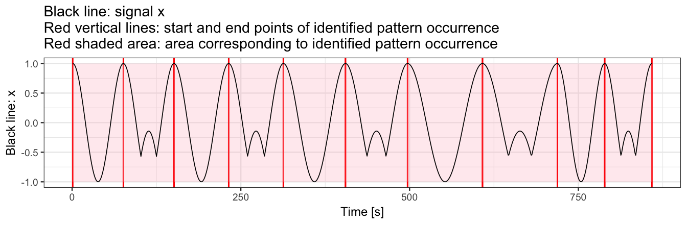
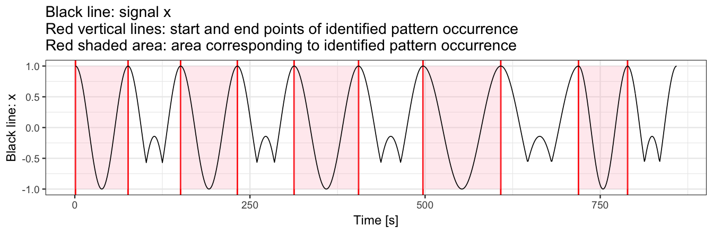

Introduction to adept package
Marta Karas
Ciprian Crainiceanu
Jacek Urbanek
2019-06-15
Source:vignettes/adept-intro.Rmd
adept-intro.RmdIntroduction
The adept package implements ADaptive Empirical Pattern Transformation (ADEPT) method1 for pattern segmentation from a time-series. ADEPT is optimized to perform fast, accurate walking strides segmentation from high-density data collected with a wearable accelerometer during walking. The method was validated using data collected with sensors worn at left wrist, left hip and both ankles.
This vignette introduces ADEPT algorithm and demonstrates the usage of segmentPattern function which implements ADEPT approach. Here, we focus on examples with simulated data; see the Walking strides segmentation with adept2 for the example of walking stride segmentation in real-life data.
ADEPT method
ADEPT identifies patterns in a time-series x via maximization of chosen similarity statistic (correlation, covariance, etc.) between a time-series x and a pattern template(s). It accounts for variability in both (1) pattern duration and (2) pattern shape.
Pattern template
We define a pattern template as a 1-dimensional numeric vector which values represent the pattern of interest (e.g. accelerometry data of a human stride).
- See [1] where we show a way to derive walking stride templates from accelerometry data collected at left wrist, left hip and both ankles.
- See [2] where we employed templates derived in [1] to segment stride pattern from another accelerometry data set.
In this vignette, a pattern template is a simulated data vector.
Pattern segmentation with adept package
The examples below are organized into suites. Examples within one suite share data simulation settings, for example: Examples 1: signal with no noise, same-length pattern.
Examples 1: signal with no noise, same-length pattern
Simulate data
We simulate a time-series x. We assume that
-
xis collected at a frequency of 100 Hz, - there is one shape of pattern present within
x, - each pattern lasts 1 second,
- there is no noise in the collected data.
true.pattern <- cos(seq(0, 2 * pi, length.out = 100))
x <- c(true.pattern[1], replicate(10, true.pattern[-1]))
data.frame(x = seq(0, 1, length.out = 100), y = true.pattern) %>%
ggplot() + geom_line(aes(x = x, y = y), color = "red") +
theme_bw(base_size = 9) + labs(x = "Phase", y = "Value", title = "Pattern")data.frame(x = seq(0, by = 0.01, length.out = length(x)), y = x) %>%
ggplot() + geom_line(aes(x = x, y = y)) + theme_bw(base_size = 9) +
labs(x = "Time [s]", y = "Value", title = "Time-series x")
Example 1(a): segment pattern
We use segmentPattern to segment pattern from a time-series x. We assume that a perfect template is available. We use a grid of potential pattern durations of {0.9, 0.95, 1.03, 1.1} seconds; the grid is imperfect in a sense it does not contain the duration of the true pattern used in x simulation.
out <- segmentPattern(
x = x,
x.fs = 100,
template = true.pattern,
pattern.dur.seq = c(0.9, 0.95, 1.03, 1.1),
similarity.measure = "cor",
compute.template.idx = TRUE)
out
#> tau_i T_i sim_i template_i
#> 1 4 95 0.9987941 1
#> 2 98 103 0.9992482 1
#> 3 202 95 0.9987941 1
#> 4 296 103 0.9992482 1
#> 5 400 95 0.9987941 1
#> 6 494 103 0.9992482 1
#> 7 598 95 0.9987941 1
#> 8 692 103 0.9992482 1
#> 9 796 95 0.9987941 1
#> 10 895 95 0.9987941 1
segmentPattern output
The segmentation result is a data frame, where each row describes one identified pattern occurrence:
-
tau_i- index ofxwhere pattern starts, -
T_i- pattern duration, expressed inxvector length, -
sim_i- similarity between a template andx, -
template_i- index of a template best matched to a time-seriesx(here: one template was used, hence alltemplate_i’s equal 1).
See ?segmentPattern for details.
Example 1(b): use pattern.dur.seq to modify a grid of pattern duration
We next generate a dense grid of potential pattern durations, including value 1.0 seconds used in the x simulation. A perfect match (sim_i = 1) between a time-series x and a template is obtained.
out <- segmentPattern(
x = x,
x.fs = 100,
template = true.pattern,
pattern.dur.seq = c(0.9, 0.95, 1, 1.03, 1.1),
similarity.measure = "cor",
compute.template.idx = TRUE)
out
#> tau_i T_i sim_i template_i
#> 1 1 100 1 1
#> 2 100 100 1 1
#> 3 199 100 1 1
#> 4 298 100 1 1
#> 5 397 100 1 1
#> 6 496 100 1 1
#> 7 595 100 1 1
#> 8 694 100 1 1
#> 9 793 100 1 1
#> 10 892 100 1 1
Example 1(c): use x.fs to modify x time-series frequency
We use x.fs to modify x time-series frequency, expressed in a number of observations in seconds, and we adjust pattern.dur.seq accordingly. We observe that results are the same as in Example 1(b).
out <- segmentPattern(
x = x,
x.fs = 10, ## Assumed data frequency of 10 observations per second
template = true.pattern,
pattern.dur.seq = c(0.9, 0.95, 1, 1.03, 1.1) * 10, ## Adjusted accordingly
similarity.measure = "cor",
compute.template.idx = TRUE)
out
#> tau_i T_i sim_i template_i
#> 1 1 100 1 1
#> 2 100 100 1 1
#> 3 199 100 1 1
#> 4 298 100 1 1
#> 5 397 100 1 1
#> 6 496 100 1 1
#> 7 595 100 1 1
#> 8 694 100 1 1
#> 9 793 100 1 1
#> 10 892 100 1 1Examples 2: signal with no noise, pattern duration varies
Simulate data
We simulate a time-series x. We assume that
-
xis collected at a frequency of 100 Hz, - there is one shape of a pattern present within
x, - patterns have various duration,
- there is no noise in the collected data.
set.seed(1)
true.pattern <- cos(seq(0, 2 * pi, length.out = 200))
x <- numeric()
for (vl in seq(70, 130, by = 10)){
true.pattern.s <- approx(
seq(0, 1, length.out = 200),
true.pattern, xout = seq(0, 1, length.out = vl))$y
x <- c(x, true.pattern.s[-1])
if (vl == 70) x <- c(true.pattern.s[1], x)
}
data.frame(x = seq(0, by = 0.01, length.out = length(x)), y = x) %>%
ggplot() + geom_line(aes(x = x, y = y)) + theme_bw(base_size = 9) +
labs(x = "Time [s]", y = "Value", title = "Time-series x")
## Function to plot segmentation results with ggplot2
library(ggplot2)
out.plot1 <- function(val, out, fs = 100){
yrange <- c(-1, 1) * max(abs(val))
y.h <- 0
plt <- ggplot()
for (i in 1:nrow(out)){
tau1_i <- out[i, "tau_i"]
tau2_i <- tau1_i + out[i, "T_i"] - 1
tau1_i <- tau1_i/fs
tau2_i <- tau2_i/fs
plt <-
plt +
geom_vline(xintercept = tau1_i, color = "red") +
geom_vline(xintercept = tau2_i, color = "red") +
annotate(
"rect",
fill = "pink",
alpha = 0.3,
xmin = tau1_i,
xmax = tau2_i,
ymin = yrange[1],
ymax = yrange[2]
)
}
geom_line.df <- data.frame(x = seq(0, by = 1/fs, length.out = length(val)), y = val)
plt <-
plt +
geom_line(data = geom_line.df,
aes(x = x, y = y),
color = "black",
size = 0.3) +
theme_bw(base_size = 9) +
labs(x = "Time [s]", y = "Black line: x",
title = "Black line: signal x\nRed vertical lines: start and end points of identified pattern occurrence\nRed shaded area: area corresponding to identified pattern occurrence")
plot(plt)
}Example 2(a): segment pattern
We use a dense grid of potential pattern duration, including all values used in the x simulation to again obtain the perfect match (sim_i = 1). In this example, the start and the end points of identified patterns are connected (see figure below).
out <- segmentPattern(
x = x,
x.fs = 100,
template = true.pattern,
pattern.dur.seq = 60:130 * 0.01,
similarity.measure = "cor",
compute.template.idx = TRUE)
out
#> tau_i T_i sim_i template_i
#> 1 1 70 1 1
#> 2 70 80 1 1
#> 3 149 90 1 1
#> 4 238 100 1 1
#> 5 337 110 1 1
#> 6 446 120 1 1
#> 7 565 130 1 1
out.plot1(x, out)
Example 2(b): use pattern.dur.seq to modify a grid of pattern duration
Next, we use a less dense grid of potential pattern duration. We observe that perfect match (sim_i = 1) between a template and time-series x is no longer obtained. Note:
- A less dense
pattern.dur.seqgrid yields a shorter time of method execution. - As explained later, when peak detection tuning is used, having a “maximally dense” pattern duration grid does not contribute much.
out <- segmentPattern(
x = x,
x.fs = 100,
template = true.pattern,
pattern.dur.seq = c(0.6, 0.9, 1.2),
similarity.measure = "cor",
compute.template.idx = TRUE)
out
#> tau_i T_i sim_i template_i
#> 1 6 60 0.9954038 1
#> 2 80 60 0.9887682 1
#> 3 149 90 1.0000000 1
#> 4 243 90 0.9976255 1
#> 5 347 90 0.9934059 1
#> 6 446 120 1.0000000 1
#> 7 570 120 0.9985549 1
out.plot1(x, out)
Example 2(c): use similarity.measure to modify similarity statistic
We use similarity.measure to modify the similarity statistic. We observe that sim_i values in the result data frame change and the segmentation results change slightly too. The explanation is that a change of similarity statistic takes an effect on ADEPT iterative maximization procedure.
out <- segmentPattern(
x = x,
x.fs = 100,
template = true.pattern,
pattern.dur.seq = c(0.6, 0.9, 1.2),
similarity.measure = "cov", ## Use covariance as a similarity statistic
compute.template.idx = TRUE)
out
#> tau_i T_i sim_i template_i
#> 1 6 60 0.6440590 1
#> 2 65 90 0.7338618 1
#> 3 154 90 0.6711920 1
#> 4 243 90 0.6675955 1
#> 5 332 120 0.7320470 1
#> 6 451 120 0.6883499 1
#> 7 570 120 0.6786581 1
out.plot1(x, out)
Examples 3: signal with no noise, pattern duration and pattern shape vary
Simulate data
We simulate a time-series x. We assume that
-
xis collected at a frequency of 100 Hz, - there are two shapes of pattern present within
x, - patterns have various duration,
- there is no noise in the collected data.
true.pattern.1 <- cos(seq(0, 2 * pi, length.out = 200))
true.pattern.2 <- true.pattern.1
true.pattern.2[70:130] <- 2 * true.pattern.2[min(70:130)] + abs(true.pattern.2[70:130])
x <- numeric()
for (vl in seq(70, 130, by = 10)){
true.pattern.1.s <- approx(
seq(0, 1, length.out = 200),
true.pattern.1, xout = seq(0, 1, length.out = vl))$y
true.pattern.2.s <- approx(
seq(0, 1, length.out = 200),
true.pattern.2, xout = seq(0, 1, length.out = vl))$y
x <- c(x, true.pattern.1.s[-1], true.pattern.2.s[-1])
if (vl == 70) x <- c(true.pattern.1.s[1], x)
}
data.frame(x = seq(0, by = 0.01, length.out = length(x)), y = x) %>%
ggplot() + geom_line(aes(x = x, y = y)) + theme_bw(base_size = 9) +
labs(x = "Time [s]", y = "Value", title = "Time-series x")
plt1 <-
data.frame(x = seq(0, 1, length.out = length(true.pattern.1)), y = true.pattern.1) %>%
ggplot() + geom_line(aes(x = x, y = y), color = "red") +
theme_bw(base_size = 9) + labs(x = "Phase", y = "Value", title = "Pattern 1") +
scale_y_continuous(limits = c(-1,1))
plt2 <-
data.frame(x = seq(0, 1, length.out = length(true.pattern.2)), y = true.pattern.2) %>%
ggplot() + geom_line(aes(x = x, y = y), color = "red") +
theme_bw(base_size = 9) + labs(x = "Phase", y = "Value", title = "Pattern 2") +
scale_y_continuous(limits = c(-1,1))
plt1;plt2

Example 3(a): segment pattern
To segment pattern from x, we use a dense grid of potential pattern duration. We use a template object consisting of one of the two true patterns used in x simulation.
out <- segmentPattern(
x = x,
x.fs = 100,
template = true.pattern.1, ## Template consisting of one out of two true patterns
pattern.dur.seq = 60:130 * 0.01,
similarity.measure = "cor",
compute.template.idx = TRUE)
out
#> tau_i T_i sim_i template_i
#> 1 1 70 1.0000000 1
#> 2 70 70 0.9290889 1
#> 3 139 80 1.0000000 1
#> 4 218 80 0.9291321 1
#> 5 297 90 1.0000000 1
#> 6 386 90 0.9287727 1
#> 7 475 100 1.0000000 1
#> 8 574 100 0.9287316 1
#> 9 673 110 1.0000000 1
#> 10 782 110 0.9285349 1
#> 11 891 120 1.0000000 1
#> 12 1010 120 0.9284384 1
#> 13 1129 130 1.0000000 1
#> 14 1258 130 0.9283518 1
out.plot1(x, out)
Example 3(b): use similarity.measure.thresh to modify the threshold of minimal similarity
We use a similarity threshold to segment only those patterns for which similarity (here: correlation) is greater than 0.95. Note that using the threshold may substantially speed up method execution when working with a large data set.
out <- segmentPattern(
x = x,
x.fs = 100,
template = true.pattern.1,
pattern.dur.seq = 60:130 * 0.01,
similarity.measure = "cor",
similarity.measure.thresh = 0.95,
compute.template.idx = TRUE)
out
#> tau_i T_i sim_i template_i
#> 1 1 70 1 1
#> 2 139 80 1 1
#> 3 297 90 1 1
#> 4 475 100 1 1
#> 5 673 110 1 1
#> 6 891 120 1 1
#> 7 1129 130 1 1
out.plot1(x, out)
Example 3(c): use multiple templates simultaneously
We next use a template object consisting of both true patterns used in x simulation. We observe that the index of a pattern template best matched to a pattern in the time-series x is 1 and 2 interchangeably.
out <- segmentPattern(
x = x,
x.fs = 100,
template = list(true.pattern.1, true.pattern.2),
pattern.dur.seq = 60:130 * 0.01,
similarity.measure = "cor",
compute.template.idx = TRUE)
out
#> tau_i T_i sim_i template_i
#> 1 1 70 1 1
#> 2 70 70 1 2
#> 3 139 80 1 1
#> 4 218 80 1 2
#> 5 297 90 1 1
#> 6 386 90 1 2
#> 7 475 100 1 1
#> 8 574 100 1 2
#> 9 673 110 1 1
#> 10 782 110 1 2
#> 11 891 120 1 1
#> 12 1010 120 1 2
#> 13 1129 130 1 1
#> 14 1258 130 1 2
out.plot1(x, out)
Examples 4: signal with noise, pattern duration and pattern shape vary
Simulate data
We simulate a time-series x. We assume that
-
xis collected at a frequency of 100 Hz, - there are two shapes of a pattern present within
x, - patterns have various duration,
- there is noise in the collected data.
## Generate `x` as a noisy version of a time-series generated in *Examples 3*.
set.seed(1)
x <- x + rnorm(length(x), sd = 0.5)
data.frame(x = seq(0, by = 0.01, length.out = length(x)), y = x) %>%
ggplot() + geom_line(aes(x = x, y = y), size = 0.3) + theme_bw(base_size = 9) +
labs(x = "Time [s]", y = "Value", title = "Time-series x")Example 4(a): segment pattern
We use two templates simultaneously in segmentation.
out <- segmentPattern(
x = x,
x.fs = 100,
template = list(true.pattern.1, true.pattern.2),
pattern.dur.seq = 60:130 * 0.01,
similarity.measure = "cor",
compute.template.idx = TRUE)
out
#> tau_i T_i sim_i template_i
#> 1 4 63 0.8615665 1
#> 2 76 62 0.7351057 2
#> 3 137 84 0.7708233 1
#> 4 220 76 0.6768561 2
#> 5 295 92 0.8507212 1
#> 6 391 83 0.7404364 2
#> 7 473 106 0.8300020 1
#> 8 582 87 0.6515298 2
#> 9 668 118 0.8047385 1
#> 10 785 106 0.6958617 2
#> 11 890 123 0.7927484 1
#> 12 1015 113 0.6789908 1
#> 13 1129 130 0.7938183 1
#> 14 1265 123 0.7686607 2
out.plot1(x, out)
Example 4(b): use x.adept.ma.W to smooth x for similarity matrix computation
We use x.adept.ma.W to define a length of a smoothing window to smooth x for similarity matrix computation; x.adept.ma.W is expressed in seconds and the default is NULL (no smoothing applied).
Smoothing of a time-series x
Function windowSmooth allows observing the effect of smoothing for different values of smoothing window length W. W is expressed in seconds. Here, W = 0.1 seconds seems to be a plausible choice.
x.smoothed <- windowSmooth(x = x, x.fs = 100, W = 0.1)
data.frame(x = seq(0, by = 0.01, length.out = length(x.smoothed)), y = x.smoothed) %>%
ggplot() + geom_line(aes(x = x, y = y)) + theme_bw(base_size = 9) +
labs(x = "Time [s]", y = "Value", title = "Time-series x smoothed")
#> Warning: Removed 8 rows containing missing values (geom_path).
Use x.adept.ma.W = 0.1 and compare with results from Example 4(a). Observe that using a smoothed version of x in similarity matrix computation is pronounced in sim_i values in the output data frame, as well as in a slight change in tau_i and T_i values.
out <- segmentPattern(
x = x,
x.fs = 100,
template = list(true.pattern.1, true.pattern.2),
pattern.dur.seq = 60:130 * 0.01,
similarity.measure = "cor",
x.adept.ma.W = 0.1,
compute.template.idx = TRUE)
out
#> tau_i T_i sim_i template_i
#> 1 4 63 0.9931174 1
#> 2 75 63 0.9683646 2
#> 3 139 79 0.9683054 1
#> 4 217 80 0.9748040 2
#> 5 296 94 0.9802473 1
#> 6 391 82 0.9462213 2
#> 7 472 106 0.9855837 1
#> 8 578 93 0.9608881 2
#> 9 670 115 0.9887225 1
#> 10 784 107 0.9562694 2
#> 11 896 113 0.9734575 1
#> 12 1008 127 0.9703118 1
#> 13 1134 116 0.9606235 1
#> 14 1266 122 0.9593345 2
out.plot1(x, out)
Example 4(c): use fine-tune procedure for peak detection
We employ a fine-tuning procedure for stride identification.
Fine-tune procedure "maxima"
Fine-tune procedure "maxima" tunes preliminarily identified start and end of a pattern occurrence so as they correspond to local maxima of x found within neighborhoods of the preliminary locations.
- The parameter
finetune.maxima.nbh.W, expressed in seconds, defines a length of the two neighborhoods within which we search for local maxima. - Smoothed version of
xmay be used for local maxima search (as presented later).
out <- segmentPattern(
x = x,
x.fs = 100,
template = list(true.pattern.1, true.pattern.2),
pattern.dur.seq = 60:130 * 0.01,
x.adept.ma.W = 0.1,
finetune = "maxima",
finetune.maxima.nbh.W = 0.3,
compute.template.idx = TRUE)
out
#> tau_i T_i sim_i template_i
#> 1 4 67 0.7183698 1
#> 2 70 78 0.4250660 2
#> 3 147 60 0.6161509 1
#> 4 206 98 0.5407526 2
#> 5 303 78 0.7570218 1
#> 6 380 83 0.3459633 2
#> 7 462 117 0.7566122 1
#> 8 578 93 0.5045821 2
#> 9 670 105 0.7153597 1
#> 10 774 113 0.5760463 2
#> 11 893 128 0.6794591 1
#> 12 1020 112 0.4026054 1
#> 13 1131 123 0.6736391 1
#> 14 1253 125 0.5570096 2
out.plot1(x, out)
We observe that almost all identified pattern occurrence start/end points are hitting the time point which our eyes identify as local x maxima.
Example 4(d): use fine-tune procedure and smooth signal for peak detection
We smooth x for both similarity matrix computation (set x.adept.ma.W = 0.1) and for fine-tune peak detection procedure (set finetune.maxima.nbh.W = 0.3).
- Here,
W = 0.5seconds seems to be a plausible choice for fine-tune peak detection procedure as it removes (“smooth together”) multiple local maxima ofx, leaving out a single one.
x.smoothed.2 <- windowSmooth(x = x, x.fs = 100, W = 0.5)
data.frame(x = seq(0, by = 0.01, length.out = length(x.smoothed.2)), y = x.smoothed.2) %>%
ggplot() + geom_line(aes(x = x, y = y)) + theme_bw(base_size = 9) +
labs(x = "Time [s]", y = "Value", title = "Time-series x smoothed aggresively")
#> Warning: Removed 48 rows containing missing values (geom_path).
out <- segmentPattern(
x = x,
x.fs = 100,
template = list(true.pattern.1, true.pattern.2),
pattern.dur.seq = 60:130 * 0.01,
similarity.measure = "cor",
x.adept.ma.W = 0.1, ## smoothing parameter for similarity matrix computation
finetune = "maxima", ## use fine-tuning
finetune.maxima.ma.W = 0.5, ## smoothing parameter for peak detection in fine-tuning
finetune.maxima.nbh.W = 0.3, ## neighborhoods length in fine-tuning
compute.template.idx = TRUE)
out
#> tau_i T_i sim_i template_i
#> 1 1 72 0.9931174 1
#> 2 72 71 0.9683646 2
#> 3 142 80 0.9688902 1
#> 4 221 78 0.9785617 2
#> 5 298 89 0.9802473 1
#> 6 386 90 0.9632459 2
#> 7 475 101 0.9855837 1
#> 8 575 101 0.9766671 2
#> 9 675 107 0.9887225 1
#> 10 781 118 0.9706882 2
#> 11 898 111 0.9734575 1
#> 12 1008 122 0.9703118 1
#> 13 1133 128 0.9652139 1
#> 14 1260 114 0.9593345 2We plot segmentation results.
## Function to plot nice results visualization
out.plot2 <- function(val, val.sm, out, fs = 100){
yrange <- c(-1, 1) * max(abs(val))
y.h <- 0
geom_line.df1 <- data.frame(
x = seq(0, by = 1/fs, length.out = length(val)), y = val)
plt <-
ggplot() +
geom_line(data = geom_line.df1,
aes(x = x, y = y),
color = "grey")
for (i in 1:nrow(out)){
tau1_i <- out[i, "tau_i"]
tau2_i <- tau1_i + out[i, "T_i"] - 1
tau1_i <- tau1_i/fs
tau2_i <- tau2_i/fs
plt <-
plt +
geom_vline(xintercept = tau1_i, color = "red") +
geom_vline(xintercept = tau2_i, color = "red") +
annotate(
"rect",
fill = "pink",
alpha = 0.3,
xmin = tau1_i,
xmax = tau2_i,
ymin = yrange[1],
ymax = yrange[2]
)
}
geom_line.df2 <- data.frame(
x = seq(0, by = 1/fs, length.out = length(val.sm)), y = val.sm)
plt <-
plt +
geom_line(data = geom_line.df2,
aes(x = x, y = y),
color = "black", size = 0.6, alpha = 0.8) +
theme_bw(base_size = 9) +
labs(x = "Time [s]",
y = "Black line: smoothed x",
title ="Light gray line: signal x\nBlack line: smoothed signal x\nRed vertical lines: start and end points of identified pattern occurrence\nRed shaded area: area corresponding to identified pattern occurrence")
plot(plt)
}out.plot2(x, windowSmooth(x = x, x.fs = 100, W = 0.5), out)
#> Warning: Removed 48 rows containing missing values (geom_path).
Karas, M., Straczkiewicz, M., Fadel, W., Harezlak, J., Crainiceanu, C., Urbanek, J.K. Adaptive empirical pattern transformation (ADEPT) with application to walking stride segmentation, Submitted to Biostatistics, 2018.↩
Karas, M., Crainiceanu, C., Urbanek, J.: Walking strides segmentation with adept vignette to the ‘adept’ package.↩